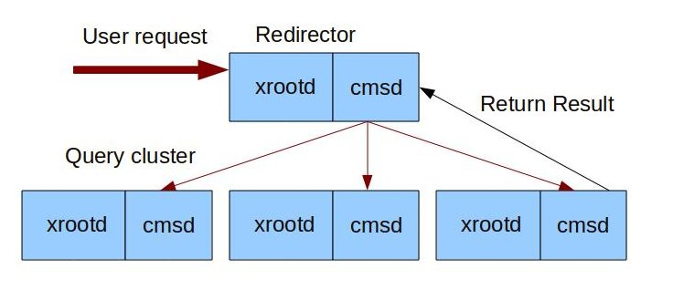

Installing the CMS XCache¶
This document describes how to install a CMS XCache. This service allows a site or regional network to cache data frequently used by the CMS experiment, reducing data transfer over the wide-area network and decreasing access latency. The are two types of installations described in this document: single or multinode cache. The difference might be based on the total disk that your cache needs.
Before Starting¶
Before starting the installation process, consider the following requirements:
- Operating system: An RHEL 8, RHEL 9, or compatible operating systems.
- User IDs: If they do not exist already, the installation will create the Linux user IDs
xrootd - Host certificate: Required for client authentication and authentication with CMS VOMS Server See our documentation for instructions on how to request and install host certificates.
- Network ports: The cache service requires the following ports open:
- Inbound TCP port 1094 for file access via the XRootD protocol
- Outbound UDP port 9930 for reporting to
xrd-report.osgstorage.organdxrd-mon.osgstorage.orgfor monitoring
- Hardware requirements: We recommend that a cache has at least 10Gbps connectivity, 100TB of disk space for the whole cache (can be divided among several caches), and 8GB of RAM.
As with all OSG software installations, there are some one-time steps to prepare in advance:
- Obtain root access to the host
- Prepare the required Yum repositories
- Install CA certificates
Installing the Cache¶
The CMS XCache ROM software consists of an XRootD server with special configuration and supporting services. To simplify installation, OSG provides convenience RPMs that install all required packages with a single command:
root@host # yum install cms-xcache
Configuring the Cache¶
First, you must create a "cache directory", which will be used to store downloaded files.
By default this is /mnt/stash.
We recommend using a separate file system for the cache directory,
with at least 1 TB of storage available.
Note
The cache directory must be writable by the xrootd:xrootd user and group.
The cms-xcache package provides default configuration files in /etc/xrootd/xrootd-cms-xcache.cfg and /etc/xrootd/config.d/.
Administrators may provide additional configuration by placing files in /etc/xrootd/config.d/1*.cfg (for files that need to be processed BEFORE the OSG configuration) or /etc/xrootd/config.d/9*.cfg (for files that need to be processed AFTER the OSG configuration).
You must configure every variable in /etc/xrootd/config.d/10-common-site-local.cfg.
The mandatory variables to configure are:
set rootdir = /mnt/stash: the mounted filesystem path to export. This document refers to this as/mnt/stash.set resourcename = YOUR_RESOURCE_NAME: the resource name registered with the OSG for example ("T2_US_UCSD")
Note
XRootD can manage a set of independent disk for the cache. So you can modify file 90-cms-xcache-disks.cfg and add the disks there then rootdir just becomes a place to hold symlinks.
Ensure the xrootd service has a certificate¶
The service will need a certificate for reporting and to authenticate to CMS AAA. The easiest solution for this is to use your host certificate and key as follows:
- Copy the host certificate to
/etc/grid-security/xrd/xrd{cert,key}.pem - Set the owner of the directory and contents
/etc/grid-security/xrd/toxrootd:xrootd:root@host # chown -R xrootd:xrootd /etc/grid-security/xrd/
Note
You must repeat the above steps whenever you renew your host certificate. If you automate certificate renewal, you should automate copying as well. For example, if you are using Certbot for Let's Encrypt, you should write a "deploy hook" as documented here.
Note
You must also register this certificate with the CMS VOMS (https://voms2.cern.ch:8443/voms/cms/)
Configuring Optional Features¶
Adjust disk utilization¶
To adjust the disk utilization of your cache, create or edit a file named /etc/xrootd/config.d/90-local.cfg
and set the values of pfc.diskusage.
pfc.diskusage 0.90 0.95
The two values correspond to the low and high usage water marks, respectively. When usage goes above the high water mark, the XRootD service will delete cached files until usage goes below the low water mark.
Modify the storage access settings at a site¶
In order for CMSSW jobs to use the cache at your site you need to modify the storage.xml and create the following rules
# Portions of /store in xcache
<lfn-to-pfn protocol="direct" destination-match=".*"
path-match="/+store/(data/.*/.*/NANOAOD/.*)"
result="root://yourlocalcache:1094//store/$1"/>
<lfn-to-pfn protocol="direct" destination-match=".*"
path-match="/+store/(mc/.*/.*/NANOAODSIM/.*)"
result="root://yourlocalcache:1094//store/$1"/>
Note
If you are installing a multinode cache then instead of yourlocalcache:1094 url should be changed for yourcacheredirector:2040
Enable remote debugging¶
XRootD provides remote debugging via a read-only file system named digFS. This feature is disabled by default, but you may enable it if you need help troubleshooting your server.
To enable remote debugging, edit /etc/xrootd/digauth.cfg and specify the authorizations for reading digFS.
An example of authorizations:
all allow gsi g=/glow h=*.cs.wisc.edu
*.cs.wisc.edu in the /glow VOMS group.
See the latest Xrd/XRootD Configuration Reference at the XRootD documentation page for the full syntax.
Remote debugging should only be enabled for as long as you need assistance.
As soon as your issue has been resolved, revert any changes you have made to /etc/xrootd/digauth.cfg.
Installing a Multinode Cache (optional)¶
Some sites would like to have a single logical cache composed of several nodes as shown below:

This can be achieved by following the next steps
Install an XCache redirector¶
This can be a simple lightweight virtual machine and will be the single point of contact from jobs to the caches.
-
Install the redirector package
root@host # yum install xcache-redirector -
Create file named
/etc/xrootd/config.d/04-local-redir.cfgwith contents:all.manager yourlocalredir:2041 -
You must configure every variable in
/etc/xrootd/config.d/10-common-site-local.cfg. The mandatory variables to configure are:set rootdir = /mnt/stash: the mounted filesystem path to export. This document refers to this as/mnt/stash.set resourcename = YOUR_RESOURCE_NAME: the resource name registered with the OSG for example ("T2_US_UCSD")
-
Start and enable the
cmsdandxrootdproccess:
| Software | Service name | Notes |
|---|---|---|
| XRootD | cmsd@xcache-redir.service |
The cmsd daemon that interact with the different xrootd servers |
| XRootD | xrootd@xcache-redir.service |
The xrootd daemon which performs authenticated data transfers |
Configuring each of your cache nodes¶
-
Create a config file in the nodes where you installed your caches
/etc/xrootd/config.d/94-xrootd-manager.cfgwith the following contents:all.manager yourlocalredir:2041 -
Start and enable the
cmsdservice:
| Software | Service name | Notes |
|---|---|---|
| XRootD | cmsd@cms-xcache.service |
The xrootd daemon which performs authenticated data transfers |
Managing CMS XCache and associated services¶
These services must be managed by systemctl and may start additional services as dependencies.
As a reminder, here are common service commands (all run as root) for EL8+:
| To... | On EL8+, run the command... |
|---|---|
| Start a service | systemctl start <SERVICE-NAME> |
| Stop a service | systemctl stop <SERVICE-NAME> |
| Enable a service to start on boot | systemctl enable <SERVICE-NAME> |
| Disable a service from starting on boot | systemctl disable <SERVICE-NAME> |
CMS XCache services¶
| Software | Service name | Notes |
|---|---|---|
| XRootD | xrootd@cms-xcache.service |
The XRootD daemon, which performs the data transfers |
| XRootD (Optional) | cmsd@cms-xcache.service |
The cmsd daemon that interact with the different xrootd servers |
| Fetch CRL | fetch-crl.timer |
Required to authenticate monitoring services. See CA documentation for more info |
xrootd-renew-proxy.service |
Renew a proxy for downloads to the cache | |
xrootd-renew-proxy.timer |
Trigger daily proxy renewal |
XCache redirector services (Optional)¶
In the node where the cache redirector is installed these are the list of services:
| Software | Service name | Notes |
|---|---|---|
| XRootD (Optional) | xrootd@xcache-redir.service |
The xrootd daemon which performs authenticated data transfers |
| XRootD (Optional) | cmsd@xcache-redir.service |
The xrootd daemon which performs authenticated data transfers |
Validating the Cache¶
The cache server functions as a normal CMS XRootD server so first verify it with a personal CMS X.509 proxy:
=== VO cms extension information ===
VO : cms
subject : /DC=ch/DC=cern/OU=Organic Units/OU=Users/CN=efajardo/CN=722781/CN=Edgar Fajardo Hernandez
issuer : /DC=ch/DC=cern/OU=computers/CN=lcg-voms2.cern.ch
attribute : /cms/Role=NULL/Capability=NULL
attribute : /cms/uscms/Role=NULL/Capability=NULL
timeleft : 71:59:46
uri : lcg-voms2.cern.ch:15002
Then test using xrdcp directly in your cache:
user@host $ xrdcp -vf -d 1 root://cache_host:1094//store/data/Run2017B/SingleElectron/MINIAOD/31Mar2018-v1/60000/9E0F8458-EA37-E811-93F1-008CFAC919F0.root /dev/null
Getting Help¶
To get assistance, please use the this page.